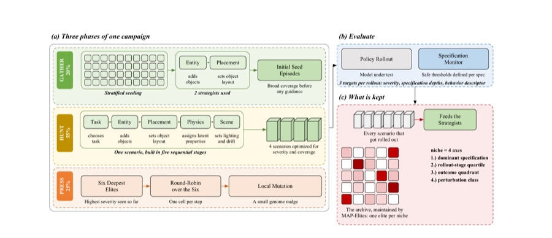
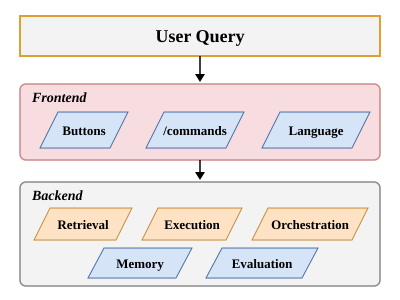
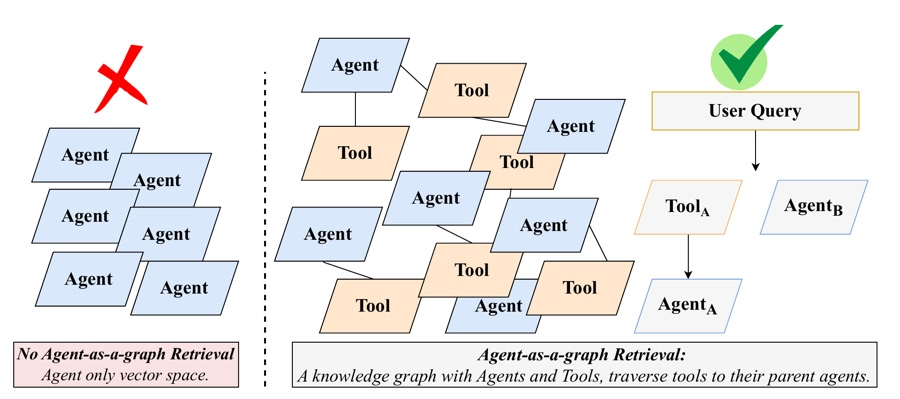
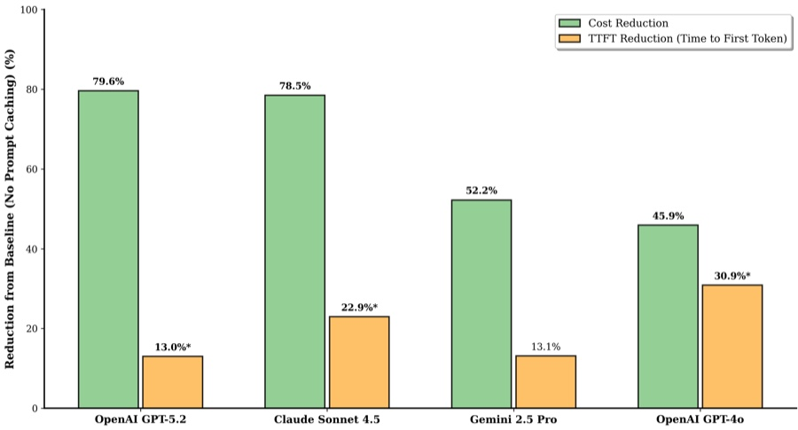
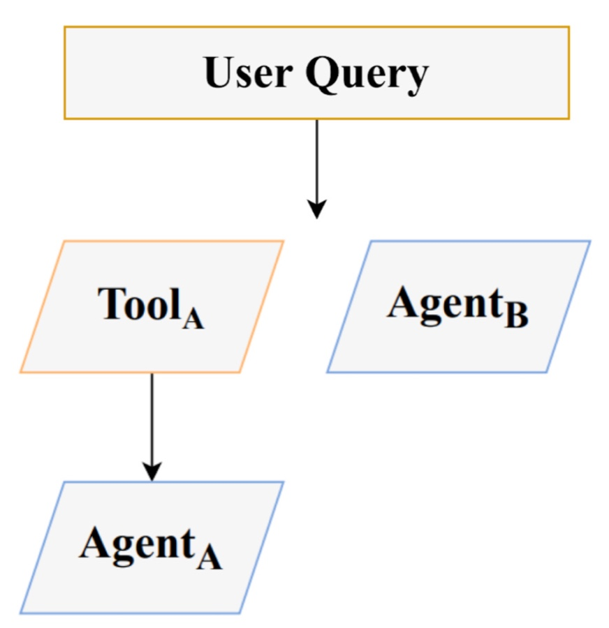
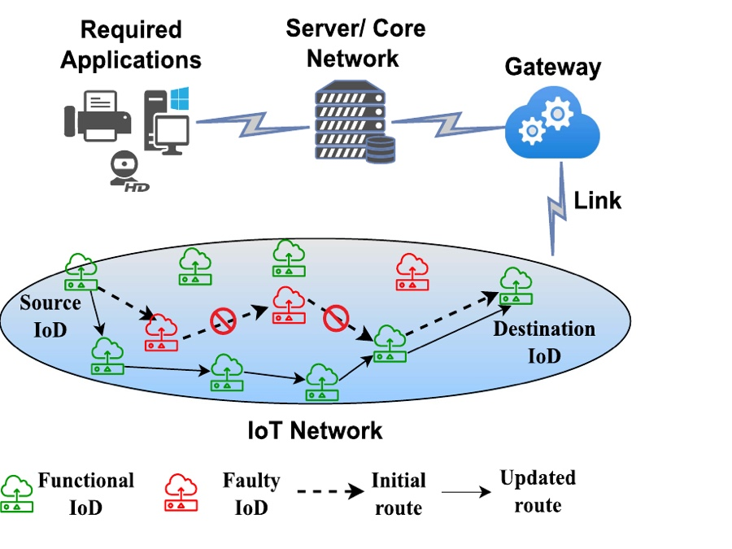
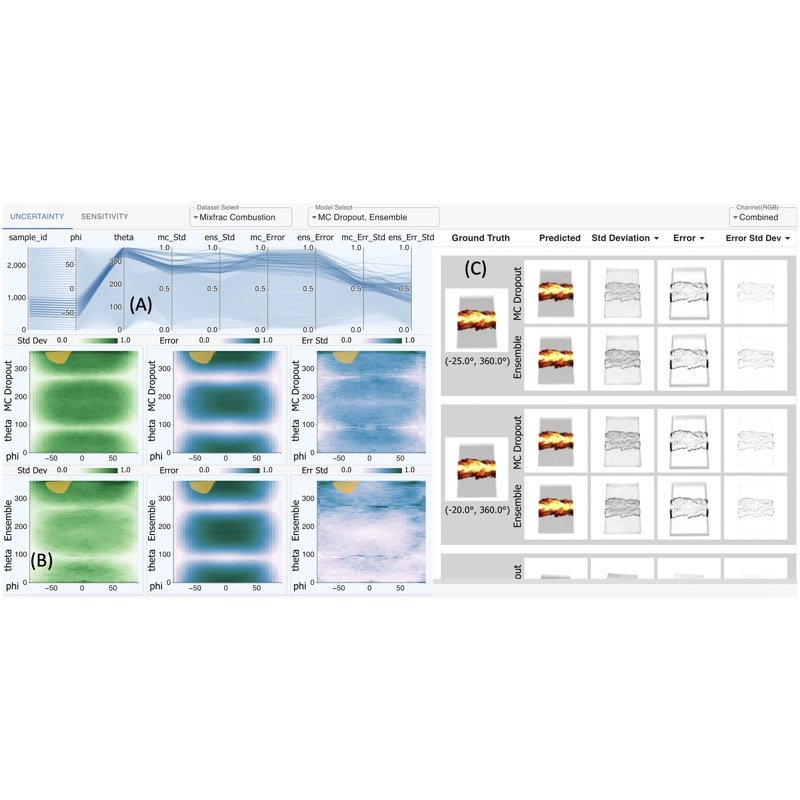
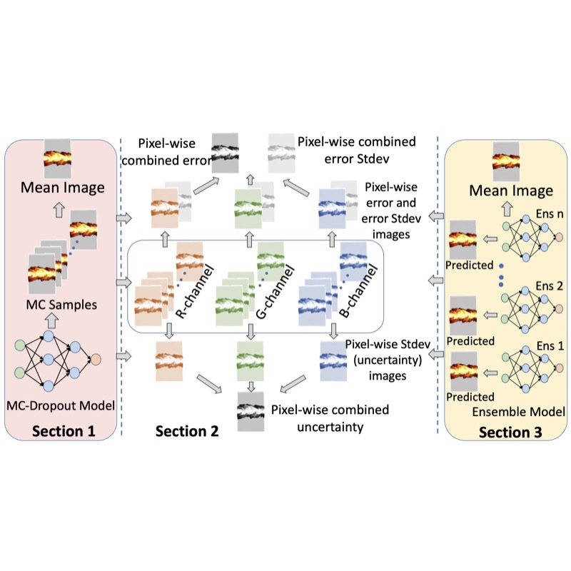
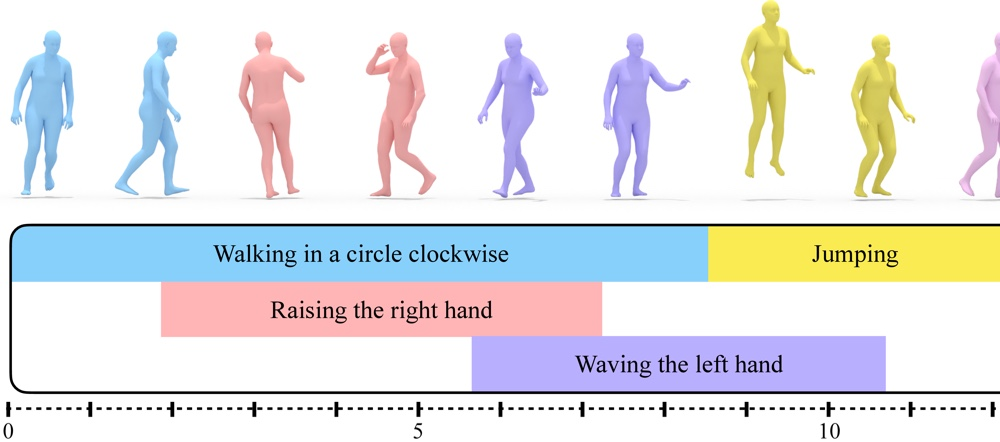
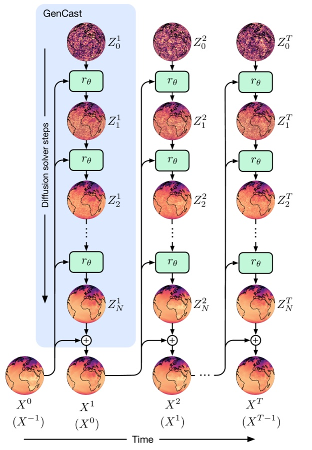

|
Faheem Nizar I'm a Senior Associate (Data Scientist) at PwC US in Bengaluru. I build agentic AI systems, and I lead a small group that tests robot foundation models for safety. That work led PwC to set up a robotics lab with WidowX arms. At PwC I have also worked on tool and agent retrieval for LLM multi-agent systems, prompt caching, text-to-3D character motion, and causal knowledge graphs for anomaly detection. I did my B.Tech in Electrical Engineering, with a minor in Machine Learning, at IIT Kanpur. There I worked with Soumya Dutta on uncertainty in deep image synthesis, with Tushar Sandhan on graph deep learning for fault prediction, and with Abhishek K. Gupta on UAV antenna tracking as a SURGE scholar. |

ResearchI work on 3D scene understanding, embodied computer vision, and robot learning. Most of my projects come back to the same question. How can we tell when a learned system is about to fail, and how can we make it more reliable? For robots this matters a lot, because a wrong prediction can turn into an unsafe action. Right now I want to study how vision-language-action models (VLAs) and world action models represent the physical world, and how to detect when they are likely to fail in an unfamiliar environment. I think 3D scene representations can help here. Geometry and spatial relationships learned from images and video could help policies handle new objects and tasks. I am also interested in uncertainty estimation under distribution shift, red-teaming robot policies before deployment, physics-aware world models, motion planning, and 3D motion generation. On the practical side, I care about making large models fast and cheap enough to run in real time. One application I keep in mind is assistive robotics. I would like robots to move safely through homes they have never seen and help older adults and people with disabilities with everyday chores. Some papers are highlighted. |
|
 |
TRIAL: Agentic Red-Teaming for Physical Safety in Robot Foundation Models
Anonymous submission Under review, 2026 TRIAL uses LLM strategists and MAP-Elites to search over visible and hidden scene factors, such as object mass, placement, and lighting. Across four robot policies it finds many rollouts that complete the task but break a safety constraint, which a success-only benchmark would miss. |
|
 |
Tool and Agent Selection for Large Language Model Agents in Production: A Survey
Elias Lumer, Anmol Gulati, Faheem Nizar, Dzmitry Hedroits, Atharva Mehta, Henry Hwangbo, Vamse Kumar Subbiah, Pradeep Honaganahalli Basavaraju, James A. Burke IEEE CAI, 2026 paper / preprint A survey of how LLM agents select tools in production systems. We split the problem into the frontend, where users pick tools through buttons, slash commands, or plain language, and the backend, which covers retrieval, execution, orchestration, memory, and evaluation. |
|
 |
Agent-as-a-Graph: Knowledge Graph-Based Tool and Agent Retrieval for LLM Multi-Agent Systems
Faheem Nizar, Elias Lumer, Anmol Gulati, Pradeep Honaganahalli Basavaraju, Vamse Kumar Subbiah ICAART, 2026 paper / arXiv We put tools and their parent agents into one knowledge graph. Vector search finds candidate tools and agents, weighted rank fusion reranks them, and graph traversal maps tools back to their agents. This raises Recall@5 by 14.9% over prior retrievers on LiveMCPBench. |
|
 |
Don't Break the Cache: An Evaluation of Prompt Caching for Long-Horizon Agentic Tasks
Elias Lumer, Faheem Nizar, A. Jangiti, K. Frank, Anmol Gulati, M. Phadate, Vamse Kumar Subbiah arXiv, 2026 arXiv We measure how prompt caching affects long agent sessions across several providers. Keeping the start of the prompt stable cuts cost by up to about 80% and also lowers time to first token. |
|
 |
Tool-to-Agent Retrieval: Bridging Tools and Agents for Scalable LLM Multi-Agent Systems
Elias Lumer, Faheem Nizar, Anmol Gulati, Pradeep Honaganahalli Basavaraju, Vamse Kumar Subbiah arXiv, 2025 arXiv Tools and agents share one vector space. When the retriever finds a matching tool, it returns that tool's parent agent, which routes queries better than matching against agent descriptions alone. |
|
 |
ENADL: Towards Performance Improvement of IoT Networks Using Deep Learning-Based Node Fault Prediction
Shraddha Tripathi, Faheem Nizar, Om Jee Pandey, Tushar Sandhan, Rajesh M. Hegde IEEE Transactions on Reliability, 2025 paper / pdf A graph neural network uses node and edge features to predict which IoT devices are about to fail, with 98% accuracy. The network then routes data around those devices and assigns energy based on node centrality, which extends network lifetime. |
|
  |
Visual Analysis of Prediction Uncertainty in Neural Networks for Deep Image Synthesis
Soumya Dutta, Faheem Nizar, Ahmad Amaan, Ayan Acharya IEEE TVCG, 2024 paper / arXiv We compare deep ensembles and MC-Dropout for estimating per-pixel uncertainty, error, and sensitivity in volume-rendered image synthesis. An interactive tool lets users explore these estimates across all viewpoints. |
Projects |

|
Stress-Testing Robot Foundation Models
PwC US, 2025 to present I benchmark open-source VLA policies and use LLM agents to suggest new scenarios where they might fail. Each policy gets a written report of its failure modes. This work led to a physical AI lab with WidowX arms and dedicated GPUs. |
|
 |
Text-to-3D Character Motion Generation
PwC US, 2025 STMC code / STMC project page A system that generates 3D character motion from text prompts for a gaming client. It builds on STMC, which lets several text prompts run on a shared timeline, so a character can walk, raise a hand, and wave at overlapping times. It lowers the motion-capture cost of animating NPCs. |
|
 |
GenCast Hurricane Forecasting
FutureSprint Hackathon, 2025 GenCast paper GenCast is a diffusion model that forecasts the weather by refining random noise into a full global weather state, one step at a time. I ran the GenCast mini ensemble on ECMWF data to forecast 15-day hurricane tracks, mapped the tracks to affected zip codes, and generated reports for stakeholders with a web-search agent. |
|
Real-Time UAV Antenna Tracker
SURGE, IIT Kanpur, 2022 A system that keeps long-range, low-latency links between UAVs and a ground station. It uses MAVLink telemetry over ESP-NOW, a self-healing BATMAN mesh on Raspberry Pis, stepper motors driven by a Pixhawk, and YOLOv5 to track the drone visually at short range. |
Miscellanea |
Experience |
Senior Associate, Data Scientist, PwC US, 2024 to present
Data Analyst Intern (PPO), American Express, 2023 Undergraduate Researcher, IIT Kanpur, 2022 to 2024 |
Education |
B.Tech in Electrical Engineering, Minor in Machine Learning, IIT Kanpur, 2020 to 2024 |
Awards |
Academic Distinction, IIT Kanpur, 2024
First Place, IoT Innovation Contest, PwC FutureThink Cloud Innovation Summit, 2024 SURGE Scholar, IIT Kanpur, 2022 All India Rank 1136, JEE Advanced, 2020 |
Service |
Learning & Development Lead, PwC Data Science Team (46 members), 2024 to present
Head of Web Development, Academics and Career Council, IIT Kanpur, 2022 to 2023 |
|
Website template from Jon Barron. |